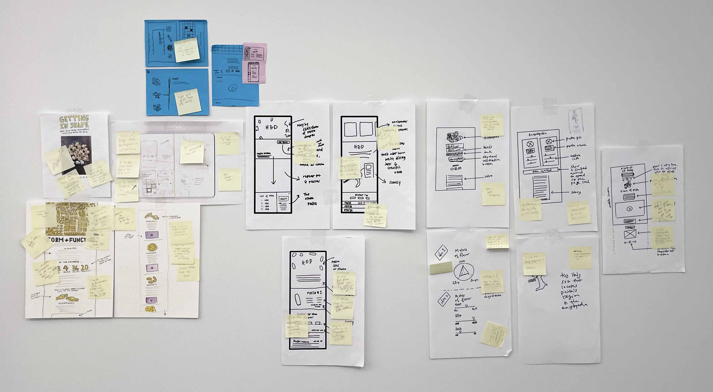
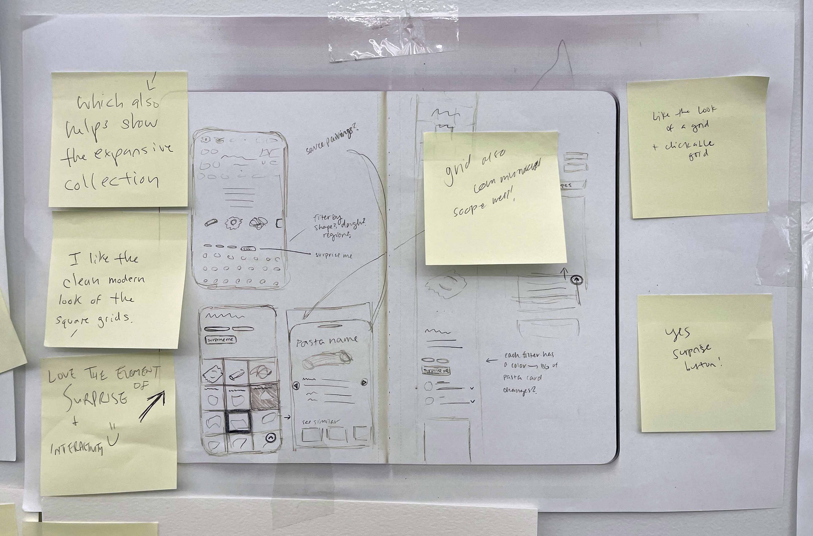

timeline: six weeks
role: designer, developer
publication: San Francisco Chronicle
skills: web development, web design, React.js
the project
The goal: to create a fun, visually exciting piece that showcases the vastness of local restaurant Flour + Water’s pasta shape encyclopedia.
I worked on this project during my internship at the San Francisco Chronicle, where I was embedded on the digital design team. Part of a larger pasta story package by The Chronicle’s food and wine team, this particular story focuses on the 83 pasta shapes a famous SF restaurant made and highlights how six of them are made.
the process
Because this project was so visually ambitious, it required heavy collaboration between the food, visuals and design teams from the start. After an initial meeting with the writer and editors, the three teams participated in The Chronicle’s first-ever design sprint: I and the other three designers presented pencil-and-paper mockups of how we thought the story could be presented, and together we all aligned on a vision that combined a mix of everyone’s ideas. The top elements that we wanted to include were a highly visual “pasta encyclopedia” grid, a "surprise me" button to promote exploration and custom illustrations to give the story a fun feel.
 I was in charge of building the individual “featured” pasta sections, as well as customizing the topper and helping out with any other tasks as needed. We wanted this story to be one that a reader could spend a lot of time with, so we made sure that the page was easy to navigate and wouldn’t trap users in one area – we did this by including “read more” buttons on the featured pastas in the encyclopedia that linked to the its more detailed section lower on the page, as well as a sticky “back to top” button that returned readers to the encyclopedia. After extensive design and code reviews, as well as testing the story on different devices, we published the story as part of the food team’s larger package on pasta.
the solution
Take a look at the final story here! Our team was really happy with the final product, and the story was one of the top read articles on its pub day. This was the biggest project I worked on while at The Chronicle – it was a great experience to see how a long term, dev-heavy and cross-team project is managed from start to finish in a newsroom, and I learned so much from the designers and developers I worked with.